地政学
ケンブリッジは国家首都ではないが、大学と研究機関を通じて英国の科学政策、国際人材、医薬品、AI、出版へ強い影響を持つ。ロンドンに近く、フェンズと東部地域の成長を結ぶ小さな戦略都市だ。世界の人材も集まる。
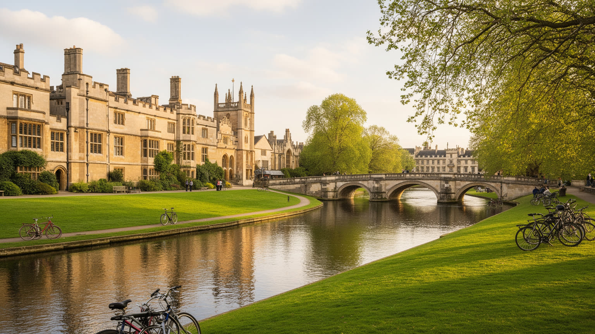
🇬🇧 イギリス / イングランド東部 / World City Atlas
カム川沿いのカレッジ都市であり、世界的な大学、出版、生命科学、AI、半導体、観光が同じ小さな市域に重なる。学問の権威と住宅不足、学生の日常、湿地の気候が近い都市です。
都市の骨格
ケンブリッジは市域の小ささに対して、大学、病院、研究所、出版、観光の影響が大きい。古い中庭と新しい研究キャンパス、学生の自転車、住宅開発、湿地へ続く低地が一つの都市を形づくります。
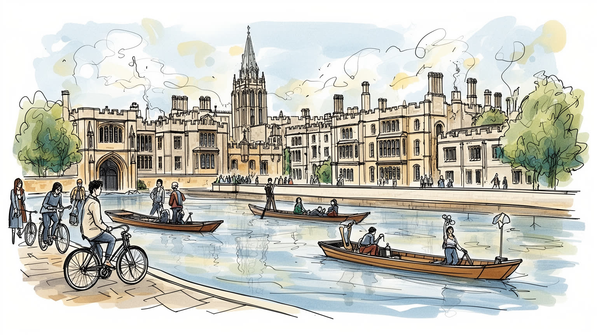
ケンブリッジは国家首都ではないが、大学と研究機関を通じて英国の科学政策、国際人材、医薬品、AI、出版へ強い影響を持つ。ロンドンに近く、フェンズと東部地域の成長を結ぶ小さな戦略都市だ。世界の人材も集まる。
大学、病院、生命科学、ソフトウェア、半導体設計、出版、観光が雇用を支える。研究者や学生だけでなく、介護、清掃、飲食、バス、建設、ホテル労働が都市を動かし、家賃の高さが働く人を圧迫する。通勤も重い。
カレッジ礼拝堂、聖歌隊、図書館、出版、劇場、博物館、パブ、学生行事が文化の暦を作る。キリスト教の制度と世俗的な研究文化、移民の宗教施設、大学都市らしい討論の習慣が共存している。聖歌も日常に深く残る。
観光客はキングス礼拝堂、カム川、パンティング、学院街を歩くが、住民には住宅不足、学生化、交通混雑、低賃金サービス職、成長と景観保護の調整が日常の課題になる。美しい街ほど生活費は重い。市民の負担も大きい。
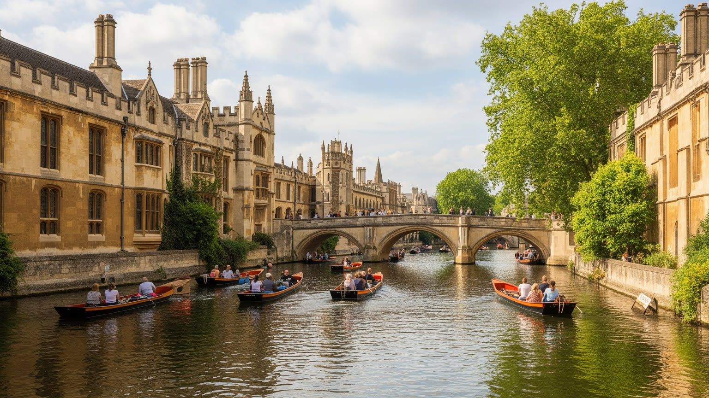
ケンブリッジを最初に読む手がかりは、カム川とカレッジの並びである。川は大きな港を作ったわけではないが、低い橋、芝地、柳、小舟、背後の礼拝堂や図書館を結び、都市の記憶を一つの歩ける景観にしている。キングス、トリニティ、セントジョンズ、クイーンズなどのカレッジは、教育施設であると同時に、門、礼拝堂、食堂、中庭、庭園、宿舎を持つ小さな制度都市である。観光客はパンティングの視点から石造建築を眺めるが、そこには学生の生活、教員の研究、寄付、土地所有、入試、儀礼、清掃、庭師、食堂職員の仕事が重なる。川沿いの美しさは自然な風景ではなく、長い制度管理と景観規制で保たれてきた。市民が自由に使える公共空間と、大学が管理する半私的な空間は近接し、ときに境界を曖昧にする。カム川を歩くことは、学問の権威がどのように都市景観へ刻まれ、同時に日常の通路や観光収入になっているかを読むことである。春の芝地、夏の舟遊び、冬の霧は絵葉書のように見えるが、その使い方には細かな規則と慣習がある。川岸の静けさは、観光客の多さ、学生行事、野生生物の保護、住民の散歩が折り合うことで成り立つ。橋の上では記念写真、通学、配達、自転車の流れが交差し、小さな空間に都市の緊張が集まる。水面の静けさの背後には、大学と市、住民、訪問者が限られた空間をどう分け合うかという現代的な問題もある。
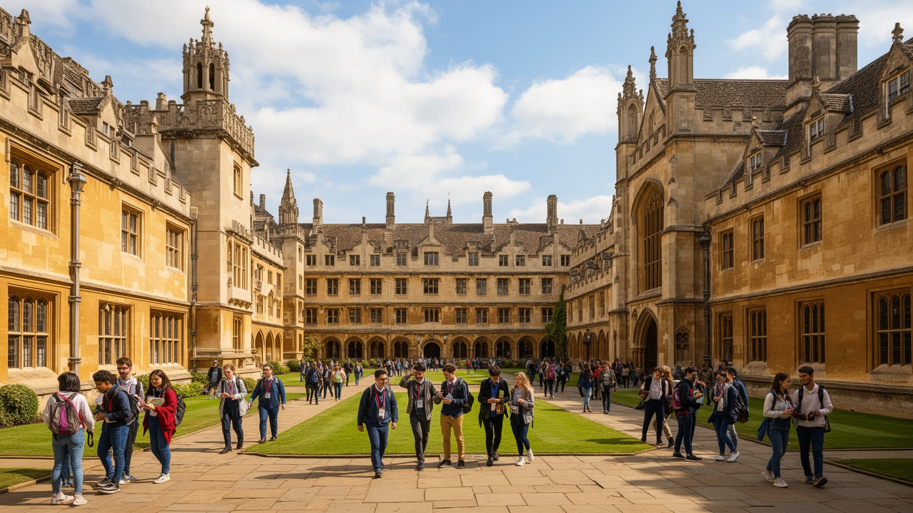
ケンブリッジ大学は、単なる大きな学校ではなく、都市の土地、時間、名声、労働市場を動かす制度である。カレッジ制は学生の生活を細かく組織し、講義、個別指導、食堂、礼拝、試験、式典を通じて都市の暦を作る。大学は研究費、寄付、出版、特許、国際学生、会議、観光を呼び込み、街の書店、パブ、宿泊、住宅、交通まで左右する。一方で、大学の成功は市民生活と緊張も生む。学生向け住宅や短期滞在が増えれば家賃は上がり、研究施設やカレッジの拡張は土地利用を変える。大学関係者は世界の知識とつながるが、清掃、厨房、警備、介護、バス運転、ホテルの仕事をする人々は、同じ都市でより厳しい住宅費に直面する。大学の権威を読むには、ノーベル賞や伝統だけでなく、雇用主、地主、観光資源、文化的門番としての役割を見る必要がある。入試の公平性、留学生の受け入れ、奨学金、研究倫理、寄付者との関係も、都市の信頼に関わる。世界的な名声があるからこそ、大学は地域社会に対して説明責任を負う。研究の自由を守ることと、地域の住宅や交通へ配慮することは対立するだけではない。ケンブリッジの公共性は、市議会だけで完結せず、大学とカレッジがどれだけ都市へ開き、住民の負担を分担するかにかかっている。学問の自由と都市の公平性を同じ地図に置くことが、この街を理解する基本になる。
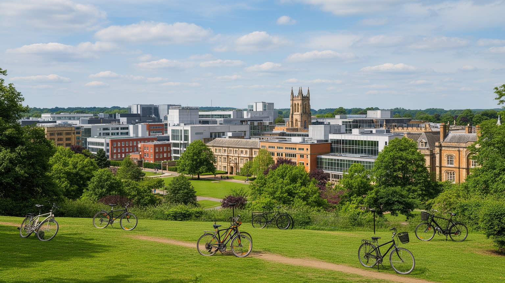
ケンブリッジの現代的な力は、古いカレッジだけでなく、周辺へ広がる科学クラスターにある。市内と近郊には生命科学、医薬品、医療機器、ソフトウェア、AI、半導体設計、量子技術、材料研究、コンサルティングが集まり、大学、病院、研究機関、スタートアップ、投資家が近い距離で結びつく。アデンブルックス病院とバイオメディカル・キャンパス、ウェスト・ケンブリッジ、サイエンスパーク、近隣の村やビジネスパークは、中心部の観光景観とは違う都市の顔を作る。研究成果が企業化される速度は速く、世界中から人材を集めるが、実験施設、データセンター、通勤、住宅、保育、研究倫理も同時に課題になる。高収入の専門職が増えるほど、地元のサービス労働者や若い研究者には家賃が重くなる。科学クラスターは都市の誇りである一方、利益がどこへ流れ、誰がその成長を支えるのかを問われる。失敗した起業や短期契約の研究者も多く、成功例だけでは生態系の姿は見えない。公共研究費から生まれた知識が、医療や教育、地域雇用へ戻る仕組みも重要である。企業と研究室の距離が近いほど、利益相反や研究の公開性も問われる。ケンブリッジを知識都市として評価するなら、論文や企業価値だけでなく、研究を支える技術者、看護師、清掃、配送、事務、実験動物施設、倫理審査、公共交通まで含めて見る必要がある。
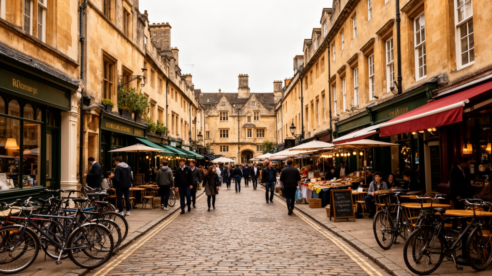
ケンブリッジの日常は、学生の時間割によって強く形づくられる。学期の始まり、試験期、卒業式、舞踏会、合唱、ボート、演劇、討論会、図書館の深夜利用が、街の混雑、店の売上、パブの賑わい、宿泊需要を変える。多くの学生はカレッジの保護された環境で生活するが、その内側にも競争、孤独、メンタルヘルス、階級差、留学生の不安がある。世界的な大学という名声は、学生に特別な機会を与える一方、失敗できない空気や過剰な自己管理を生む。市民の側から見ると、学生は文化と消費の活力であると同時に、騒音、短期居住、住宅市場への圧力、地域参加の薄さをもたらす存在にもなる。学生生活を観光的なローブやボートのイメージだけで捉えると、都市の現実を見落とす。学期外に街の人口感が変わることも、大学都市特有のリズムである。国際学生は都市を多言語化するが、ビザ、医療、住まい、孤独への支援も必要になる。学業の優秀さを当然視する空気は、弱音を吐きにくい環境を作ることもある。サークルや自治活動は、閉じたカレッジ生活を市民社会へつなぐ入口にもなる。図書館で働く人、食堂で食事を出す人、夜の安全を守る人、学生を診る医療者、下宿を管理する人まで含めて、学びの環境は作られている。ケンブリッジの若さは都市の魅力だが、その若さを支えるケアと労働を見えるものにすることが、大学都市の成熟につながる。
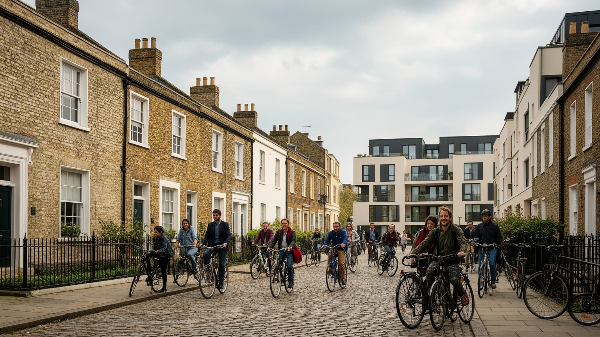
ケンブリッジの最大の社会課題の一つは住宅である。人口は大きくないが、大学、病院、研究企業、観光、ロンドンへの近さが需要を押し上げ、市内の住宅価格と家賃は所得の低い住民に厳しい。学生、研究者、看護師、介護職、飲食店員、清掃員、教師、若い家族が、同じ限られた住宅市場を奪い合う。カレッジや大学が宿舎を持つことで一部の需要は吸収されるが、大学外の労働者や家族には十分ではない。市の周辺ではエディントン、トランピントン、ダーウィン・グリーンなどの開発が進み、南ケンブリッジシャーとの境界を越えて通勤圏が広がる。それでも新しい住宅が高価なままなら、成長の利益は一部に偏る。景観保護、緑地、交通容量、洪水リスクを考えると、ただ建てればよいわけでもない。住宅圧力は、ケンブリッジの知識経済が誰の生活の上に成立しているかを問う。家を買えない若い世代は周辺自治体へ移り、通勤時間と交通負担が増える。民間賃貸の短期化や学生住宅の集中は、近隣の学校、商店、地域活動にも影響する。公営住宅や手頃な家賃の供給が弱ければ、都市は働く人を自分で遠ざけてしまう。世界的な研究都市で働く人が市内に住めず、長距離通勤や過密な住まいを強いられるなら、都市の競争力そのものが脆くなる。住宅政策は福祉の問題であると同時に、科学と教育を支える基盤である。
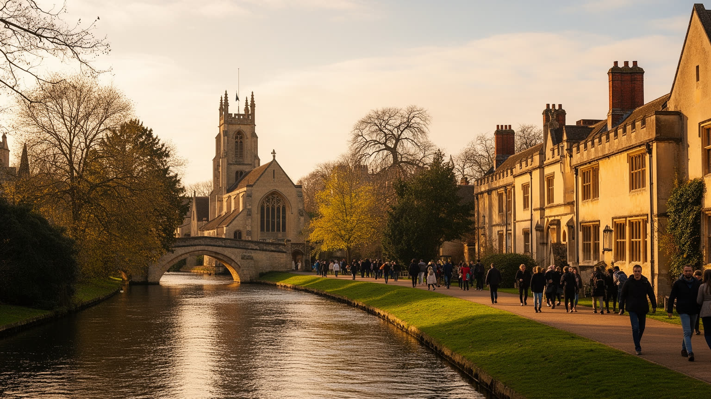
ケンブリッジ観光は、キングスカレッジ礼拝堂、カム川のパンティング、マーケットスクエア、フィッツウィリアム博物館、大学図書館、植物園、細い路地、古いパブを中心に組み立てられる。訪問者は中世以来の学問都市を短時間で体験でき、ロンドンからの日帰り旅行にも向く。しかし観光の成功は、街の使い方を変える。混雑、団体客、短時間滞在、土産物店、宿泊価格、歩道の密度は、住民や学生の日常に影響する。歴史的建築は自由に存在しているのではなく、修復、警備、清掃、入場管理、資金調達、礼拝や学事との調整で保たれている。礼拝堂は写真の対象である前に、宗教儀礼と音楽、大学の記憶を持つ場所でもある。観光客が見たい「伝統」は、ときに学生や職員の生活空間でもあり、開放と保護の線引きは簡単ではない。土産物店や短時間の写真消費が増えるほど、地元の買い物や静かな学習環境との摩擦も起こる。観光収入を文化財修復や公共トイレ、案内、歩行者環境へ戻せるかも重要だ。案内の多言語化や混雑管理は、訪問者の満足だけでなく住民の生活の質にも関わる。ケンブリッジの遺産観光を深く読むには、石造建築の美しさだけでなく、誰が維持費を払い、誰が働き、どの空間が公共に開かれ、どの記憶が語られないのかを考える必要がある。美しい街並みは、過去の贈り物であると同時に、現在の管理と政治の結果である。
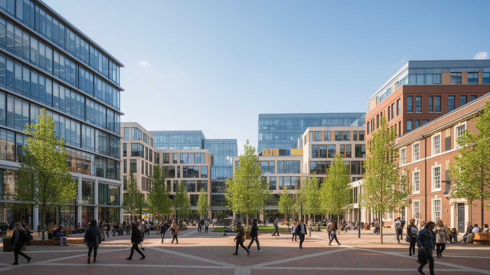
ケンブリッジの知識経済は、大学研究、出版、試験、英語教育、コンサルティング、ソフトウェア、医療、スタートアップを一つの都市圏で結びつける。ケンブリッジ大学出版局と評価機関、研究室から生まれる企業、国際会議、専門職ネットワークは、都市の名前そのものを世界市場の商品にしている。小さな市域で高い付加価値を生むことは、雇用と税収、文化的名声をもたらすが、同時に所得格差を目立たせる。博士号を持つ研究者、企業家、投資家、国際学生が集まる一方、ホテル、飲食、介護、清掃、小売、配送の仕事は賃金が伸びにくく、住居費に追いつきにくい。知識産業は軽やかに見えるが、実際には実験施設、データ、著作権、労務管理、移民制度、保育、交通、電力、廃棄物処理に依存している。企業の成長は地元の税基盤を強めるが、研究成果が買収で外へ移ることもある。特許や試験事業から得た利益を、地域の教育や技能訓練へつなげられるかも問われる。市民がその成長を実感できなければ、知識都市の名声は生活から浮いてしまう。ケンブリッジを豊かな都市として見るなら、平均値だけでは足りない。高い一人当たり生産額の背後で、誰が安定した仕事を得て、誰が都市の外へ押し出されるのかを読む必要がある。知識が公共財として広がるか、少数の資産価値に閉じるかが、次のケンブリッジを左右する。
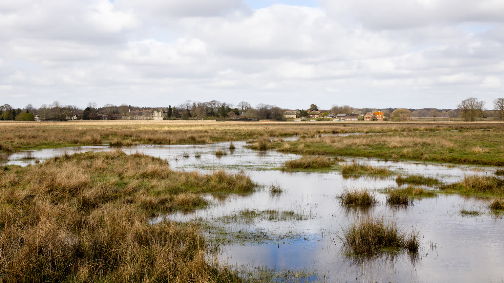
ケンブリッジは海辺の都市ではないが、フェンズに近い低地の気候と水の管理に強く影響される。周囲には排水された湿地、農地、川、草地が広がり、霧、曇天、冷たい風、夏の乾燥、豪雨の増加が都市の生活を左右する。西岸海洋性の気候は極端な寒さを避けるが、近年は熱波、干ばつ、集中豪雨への備えが重要になっている。古い石造建築、狭い路地、学生宿舎、研究施設、病院、バス停、自転車道は、暑さと雨の影響をそれぞれ受ける。川辺と草地は景観だけでなく、洪水調整、生物多様性、散歩、学生の休息、都市の冷却に役立つ。一方で、住宅開発や研究施設の拡張は、排水、緑地、交通、農地との関係を慎重に扱わなければならない。フェンズの農業は全国の食料供給にも関わり、気候変動による水管理の難しさは都市の外側で先に現れる。学生や観光客には穏やかに見える草地も、豪雨時には水を受ける余白になる。街路樹、日陰、断熱、歩ける水辺は、景観ではなく健康を守る設備である。排水の失敗は研究施設、住宅、交通を同時に止めるため、見えないインフラの維持が欠かせない。ケンブリッジの環境を読むことは、礼拝堂の尖塔だけでなく、低い土地、排水路、木陰、サイクリングロード、病院の暑熱対策を読むことでもある。美しい低地の穏やかさは、気候の時代には都市計画上の重要な条件になる。
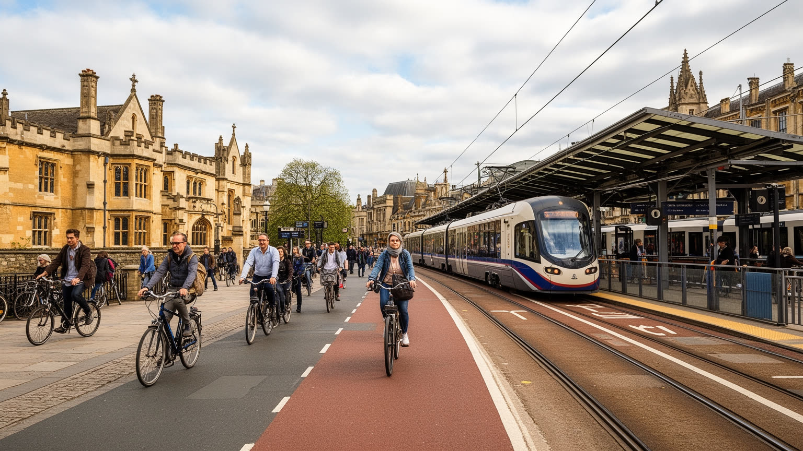
ケンブリッジは英国でも自転車利用が目立つ都市である。平坦な地形、学生人口、中心部の狭い街路、駐車の制約が、自転車を日常の移動手段にしてきた。朝夕にはカレッジ、研究所、駅、病院、学校へ向かう自転車が流れ、都市のリズムを作る。自転車は安く、速く、環境負荷も小さいが、すべての人に十分な解決ではない。雨の日、暗い冬、高齢者、障害者、子ども連れ、夜勤、長距離通勤、郊外の住宅地からの移動には、バスや鉄道、歩行空間の質が重要になる。ロンドンとの鉄道接続は人材と市場を広げる一方、住宅価格の上昇と通勤圏の拡大も招く。研究キャンパスや病院は中心部から離れ、バスの本数、混雑、運賃、乗り換えが働く人の生活を左右する。交通政策は観光客の歩きやすさだけでなく、低賃金労働者が早朝や夜に安全に通勤できるかを見なければならない。駐輪場の不足、盗難、歩道との交錯は、利用者が多い都市ならではの課題である。新駅やバスウェイ、パークアンドライドは、中心部へ車を入れすぎないための重要な道具になる。観光客に分かりやすい案内と、住民が急がず移動できる安全設計は両立させる必要がある。ケンブリッジの自転車文化は都市の誇りだが、狭い道で歩行者、観光客、配達、バス、車が競合する問題もある。小さな都市が成長を続けるほど、移動の公平性は住宅政策と同じくらい重要になる。
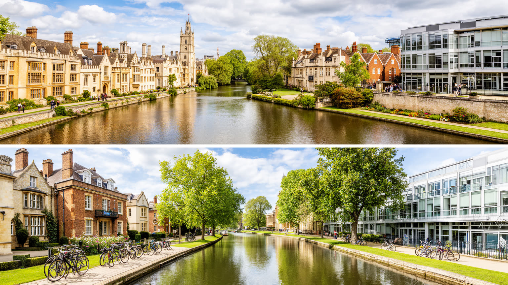
ケンブリッジは、人口規模だけでは測れない世界都市である。大都市の金融街や港を持たない一方、大学、出版、生命科学、AI、医療研究、国際学生、観光が、世界の知識と資本を小さな市域へ引き寄せている。カム川沿いの静かな景観は、学問の権威、土地所有、観光経済、学生生活、サービス労働、住宅圧力を同時に隠している。美しい中庭と礼拝堂を歩くと、伝統が都市の魅力を作っていることが分かるが、研究キャンパスや病院、郊外の新住宅地へ目を向けると、未来のケンブリッジがすでに中心部の外で作られていることも見える。この都市の課題は、成功を続けることではなく、成功が生む不均衡をどう扱うかである。高い生産性と国際的名声があるほど、家賃、交通、労働条件、緑地、公共空間、地域の包摂を丁寧に調整しなければならない。大学の門の内側だけを見れば特権の都市に見えるが、病院の夜勤、ホテルの清掃、バス通勤、郊外の住宅開発まで見ると別の輪郭が現れる。小さな市域だからこそ、研究の成功、観光の混雑、住宅の高さがすぐ隣り合う。ケンブリッジを読むことは、知識が都市を豊かにする力と、知識が都市を高価で閉じた場所にしてしまう危険を同じ地図に置くことである。川、カレッジ、自転車、研究所、住宅地、フェンズを一緒に見ると、小さな学問都市が現代の都市問題を凝縮していることが見えてくる。